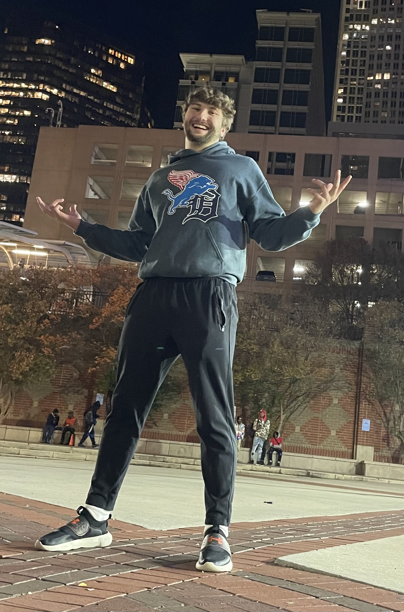
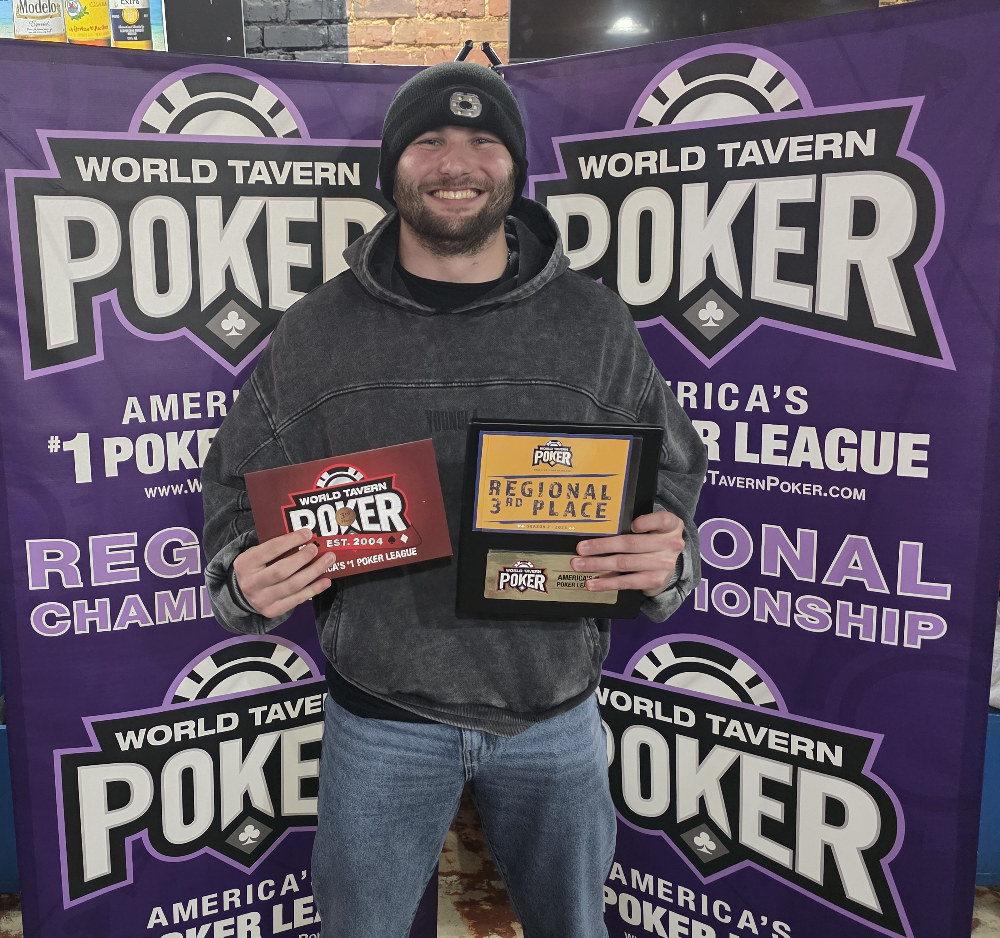

About Me

My name is Jordan Thalacker, and I was born in Dunedin, Florida. I began my collegiate journey as a student-athlete, playing college baseball at Methodist University during the 2020–2021 academic year before continuing my baseball career at Milligan University from 2021 to 2024. During my time at Milligan, I earned a degree in Information Systems, which helped establish my foundation in technology, problem-solving, and systems thinking. I am currently continuing my education at High Point University, where I am studying cybersecurity. My academic and athletic experiences have shaped my work ethic, teamwork skills, and attention to detail, and I aspire to begin a career in information technology with a forward-thinking organization where I can continue developing my skills while building a strong professional resume.
Through my coursework and hands-on experience, I have developed a strong technical foundation in cybersecurity, systems, and data management. My academic background includes database management using SQL and Microsoft Access, as well as extensive experience working in Unix and Linux environments with an emphasis on system security and penetration testing. I have studied core cybersecurity principles such as network security, risk assessment, incident response, and data protection, while also gaining experience with scripting and programming languages including Python, Visual Basic, Java, C++, and Assembly. In addition, I have practical experience in website development using HTML and CSS, along with exposure to data analytics tools and the Adobe Creative Suite. Alongside my technical abilities, I bring strong professional skills including analytical thinking, quality assurance, effective team collaboration, clear communication, adaptability, and a commitment to reliability and integrity in all work environments.
Looking ahead, my career goal is to begin working in an information technology or cybersecurity role where I can apply my technical knowledge in a practical, real-world environment. I am particularly interested in contributing to organizations that value security, reliability, and user-focused system design. By helping maintain secure infrastructures, identifying potential vulnerabilities, and supporting operational efficiency, I aim to make a positive impact through dependable and thoughtful technology solutions. As I continue to grow professionally, I hope to expand my expertise, take on greater responsibility, and contribute to projects that improve system integrity while supporting the needs of both businesses and the people who rely on their technology every day.

Interests & Activities
I have a wide range of hobbies that keep me engaged both mentally and physically. I enjoy playing video games such as Madden, MLBtheShow, Call of Duty, and many others, as well as testing my strategic skills in Texas Hold’em poker, while also dedicating time to working out and taking care of my body through self-care routines. I love exploring new places and discovering unique experiences wherever I go. Growing up, I played baseball and football and those passions have stayed with me; I remain an avid fan of the NFL and MLB. I am very passionate about my favorite sports teams which are the Detroit Lions, the Detroit Pistons, the Detroit Red Wings and the Detroit Tigers. Beyond my personal interests, I’ve been active in volunteering, including assisting with security at Bristol Motor Speedway and football games at the University of Tennessee, as well as helping the Salvation Army distribute clothes and essential items to those experiencing homelessness.
On March 7, 2026, I entered a crazy 5 hour poker tournament that had 65 participants. Throughout the event, I maintained my focus and strategic approach, not only ultimately finishing in the top 10 percent of participants, but also getting to final table, and coming in 3rd place. Throughout the tourney there was a lot of emotion, excitement, and a lot of hard decisions. It got weird at final table however due to stupidity from a couple of the players. After my 3rd place finish, I felt a sense of accomplishment and pride in my performance, as I was awarded a plaque in which it gave me a sudden bloodrush through my skin and bones that made me as emotional as I was. Along with the plaque, I also received my seat in the National Championship Finals tournament on October 5, 2026 in Las Vegas, Nevada. I have family members coming with me to experience this with me as I go onward for a chance to win a $5,000 package. I could not be more excited about this opportunity, and I can't wait for the experience.